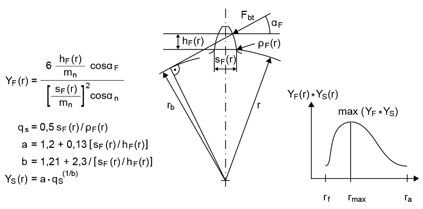

|
|
|


定义齿形系数
齿形系数 YF 考虑了齿形对名义齿根应力 σF0 的影响。应力修正系数 YS 考虑了缺口对齿根的影响。这两个系数可以通过三种不同的方式计算：
- 根据标准中的公式（常规）
按照 ISO 6336 或 DIN 3990 的定义，齿形系数和应力修正系数在齿根处、切线与齿中心线成 30° 角的点处计算。但是，人们普遍认为这种方法相当不精确，尤其是对于深齿形。 - 使用图解法
根据 Obsieger [20]，有一种更精确的方法，即计算齿形系数 YF 与应力修正系数 YS 的乘积并确定其最大值。该方法基于用于特定齿形的制造工艺，并应用于整个齿根区域的所有点。然后使用该最大值计算强度。系数 YF 和 YS 根据 ISO 6336 或 DIN 3990 中的公式计算。
这是推荐的方法，尤其适用于特殊齿形和内齿形。如有需要，该计算方法也可用于 ISO 6336 和 DIN 3990 所定义的强度计算以及精细尺寸设计。
注意：
如果在此使用图解法，KISSsoft 每次都会在计算强度之前先计算齿形。其参数取自之前输入的刀具数据（在 齿形 输入窗口中，参见"齿形"章），或取自 输入窗口中的默认设置。齿形与应力修正系数乘积的最大值会同时计算，并纳入应力计算中。

图 15.8：使用图解法的齿形系数
- 对于内齿形，根据提案 2737
当按照 ISO 6336 或 DIN 3990 计算强度时，选择此选项可使用 VDI 2737 中定义的齿形系数，该方法对内齿形更精确，因为它评估 60° 切线切点处的应力，并根据使用插齿刀的制造工艺导出齿形。
ISO 6336 中规定的齿根应力计算比 DIN 3990 中实现的计算更准确。但是，应用于临界点（60° 切线）齿根圆角的计算仍不正确。VDI 2737 附录 B 中定义的方法准确得多，因此我们建议您使用此方法。如果选择此选项，则仅计算临界截面处的齿根圆角 ϱF 和齿根厚度 sFn，其计算公式符合 VDI 2737。所有其他尺寸均按 ISO 6336 计算。
下表用 4 个示例展示了 ISO 6336 定义的结果与在齿形上测量的有效值之间齿根圆角仍会出现的较大差异。然而，VDI 2737 中所述的计算方法非常适用。
| 齿轮 x= | 插齿刀 x0= | ISO 6336-3 2006 和 2007-02 中的 ϱF | ISO 6336-3 2007-04 现行版本中的 ϱF | 在齿面上测量的 ϱF | 按 VDI 2737 的 ϱF |
| -0.75 | 0.1 | 0.201 | 0.426 | 0.233 | 0.233 |
| -0.75 | 0.0 | 0.175 | 0.403 | 0.220 | 0.220 |
| 0.0 | 0.1 | 0.298 | 0.364 | 0.284 | 0.286 |
| 0.0 | 0.0 | 0.274 | 0.343 | 0.265 | 0.264 |
表 15.7：齿根圆角的比较
关于计算 YF 的说明：
- 如果余量 As < 0.05*mn（根据 ISO 6336-3），则计算中使用理论变位系数。否则使用较大的制造变位系数 xE.e（在此应用理论重合度）。这与 STplus 程序（来自德国慕尼黑）所采用的方法一致。ISO 标准中没有给出精确定义。但是，可以在 选项卡中为齿根和齿面强度计算预定义特定的公差带。然后始终使用该值计算强度以及端面重合度。
- 根据 ISO 标准，计算时应使用整个轮齿的参考齿廓。因此，如果您输入了带凸台的预加工参考齿廓，并且在扣除磨削余量后留下了带有残余凸台的已加工齿廓，则计算中使用精加工参考齿廓。在没有凸台（或凸台过小）的预加工参考齿廓中会产生磨削缺口。为确保能正确考虑这种情况，使用预加工参考齿廓（含预加工制造变位系数）计算 YF。精加工参考齿廓也用于计算磨削缺口，从而确定 YSg（ISO 6336-3 第 7.3 节）。
Define tooth form factors
The tooth form factor YF takes into account how the tooth form affects the nominal tooth root stress σF0. The stress correction factor YS takes into account the effect of the notch on the tooth root. These two factors can be calculated in three different ways:
- According to the formulae in the standard (normal)
As defined in ISO 6336 or DIN 3990, the tooth form and the stress correction factors are calculated at the tooth root at the point at which the tangent and the tooth center line form an angle of 30°. However, it is generally acknowledged that this method is rather imprecise, especially for deep tooth forms. - Using graphical method
According to Obsieger [20], there is a more precise approach in which the product of the tooth form factor YF and the stress correction factor YS is calculated and the maximum value is determined. This method is based on the manufacturing process used for a specific tooth form and is applied to all points in the whole root area. This maximum value is then used to calculate the strength. Factors YF and YS are calculated according to the formulae in ISO 6336 or DIN 3990.
This is the recommended method, particularly for unusual tooth forms and internal toothings. If required, this calculation procedure can also be applied in strength calculations as defined in ISO 6336 and DIN 3990, as well as in fine sizing.
Note:
If you use the graphical method here, KISSsoft will calculate the tooth form before it calculates the strength, each time. It takes its parameters either from the cutter data you have entered previously, in the Tooth form input window (see chapter Tooth form), or from the default settings in the input window. The maximum value of the product of the tooth form and stress modification factor is calculated at the same time and included in the stress calculation.
Figure 15.8: Figure: Tooth form factors using the graphical method
- for internal toothing, according to proposal 2737
When calculating strength according to ISO 6336 or DIN 3990, select this option to use the tooth form factor as defined in VDI 2737, which is more precise for internal toothing, because it evaluates the stress at the point of the 60° tangent and derives the tooth form from the manufacturing process with the pinion type cutter.
The calculation specified in ISO 6336 for calculating tooth root stress is more accurate than the one implemented in DIN 3990. However, the calculation applied to the root rounding in the critical point (for a 60° tangent) is still incorrect. The method defined in VDI 2737, Annex B is much more accurate, which is why we recommend you use this method. If you select this option, only the root rounding ϱF and the root thickness sFn in the critical cross-section is calculated in accordance with the formulae in VDI 2737. All other sizes are calculated according to ISO 6336.
The table (below) uses 4 examples to show the large variations that still arise in root rounding between the result defined in ISO 6336 and the effective values measured on the tooth form. However, the calculation method stated in VDI 2737 is very suitable.
| Gear x= | Pinion Cutter x0= | ϱF in ISO 6336-3 2006 and 2007-02 | ϱF in the current edition of ISO 6336-3 2007-04 | ϱF measured on the tooth flank | ϱF with VDI 2737 |
| -0.75 | 0.1 | 0.201 | 0.426 | 0.233 | 0.233 |
| -0.75 | 0.0 | 0.175 | 0.403 | 0.220 | 0.220 |
| 0.0 | 0.1 | 0.298 | 0.364 | 0.284 | 0.286 |
| 0.0 | 0.0 | 0.274 | 0.343 | 0.265 | 0.264 |
Table 15.7: Comparison of root roundings
Note about the calculating YF:
- The theoretical profile shift is used in the calculation if the allowance is As < 0.05*mn (in accordance with ISO 6336-3). Otherwise the larger manufacturing profile shift xE.e (where the theoretical contact ratio is applied) is used. This corresponds to the procedure used in the STplus program (from Munich, Germany). An exact definition is not provided in the ISO standard. However, a specific tolerance field can be predefined in the tab for the root and flank strength calculation. This value is then always used to calculate strength and for the transverse contact ratio.
- According to the ISO standard, the reference profile for the entire toothing is to be used for the calculation. For this reason, if you input the reference profile for pre-machining with protuberance, and a manufactured profile with remaining protuberance is left after deduction of the grinding allowance, the reference profile for final machining is used for the calculation. A grinding notch is produced in the reference profile for pre-machining without a protuberance (or a protuberance that is too small). To ensure that this situation can be correctly taken into consideration, the pre-machining reference profile (with pre-machining manufacturing profile shift) is used to calculate YF. The final machining reference profile is also used to calculate the grinding notch and therefore to define YSg (section 7.3 in ISO 6336-3).